Implantée en Alsace depuis 1988, Picturial accompagne des auteurs de documentaires et de fiction. Des soirées Thema d’Arte avec Tomi Ungerer aux premiers courts métrages de la nouvelle génération, la société poursuit son travail de production à Monswiller.
Notre histoire et nos films →Implantée en Alsace depuis sa création en 1988, Picturial a connu plusieurs vies, des films pour les soirées Thema d’Arte dans les années 1990 à la production de films publicitaires et institutionnels ancrés dans son territoire, notamment pour Adidas, BMW ou Heschung.
Depuis 2022, l’arrivée d’une nouvelle génération au capital a fait renouer l’entreprise avec ses premières amours documentaires. Sous la supervision de Christian Klein, Picturial accompagne l’émergence de nouveaux auteurs et développe des films engagés, portés par le désir d’interroger notre époque. En parallèle, Picturial développe une activité de fiction et produit ses premiers courts-métrages, affirmant ainsi la diversité de son engagement dans la création cinématographique.
Vous organisez une rencontre, un spectacle ou une conférence et vous souhaitez en garder une trace filmée ?
Précisez le lieu, la date, ce que vous souhaitez filmer et à qui les images sont destinées. Nous pourrons échanger sur le dispositif de prise de vues, le son et le montage.
Parler de votre captation →Écrivez à Picturial.
Picturial SARL, 1c rue du Baron Chouard, 67700 Monswiller, traite votre nom, votre adresse e-mail et votre message pour répondre à votre demande. Ces champs sont nécessaires à son traitement. Selon la demande, le traitement repose sur notre intérêt légitime à répondre aux sollicitations reçues ou sur des démarches précontractuelles à votre initiative.
Les destinataires sont l’équipe chargée de votre demande et les prestataires techniques intervenant dans sa transmission, dont Cloudflare et Resend.
Les demandes restées sans suite sont supprimées lors de notre revue mensuelle, après douze mois sans échange. Lorsqu’une demande aboutit à un projet, les éléments nécessaires à son suivi sont conservés dans le dossier correspondant.
Pour demander l’accès, la rectification, l’effacement ou la limitation du traitement, ou exercer votre droit d’opposition ou de portabilité lorsqu’il s’applique, écrivez à contact@picturial.fr. Vous pouvez également adresser une réclamation à la CNIL.
Picturial SARL
1c rue du Baron Chouard, 67700 Monswiller
SIRET 388 235 152 00039
Direction de la publication · Christian Klein
contact@picturial.fr
Cloudflare, Inc.
101 Townsend Street, San Francisco, CA 94107, États-Unis
+1 888 993 5273